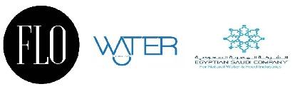

Egyptian Saudi Company
IT Manager for network and security
(2015 – 2020)
Egyptian Saudi Company is a leader Egyptian Company in FMCG field specially
Alkaline Meneral Water.
- Developed and maintained internal web-based tools for
network monitoring and asset management
using C# and SQL Server.
- Architected and deployed the company’s LAN/WAN
infrastructure, ensuring 99.9% uptime to support
business-critical applications.
- Strengthened system security by implementing firewalls, VPNs,
and intrusion detection systems, reducing network-related
incidents significantly.
- Administered servers, databases, and end-user systems,
ensuring high availability and performance
for enterprise applications.